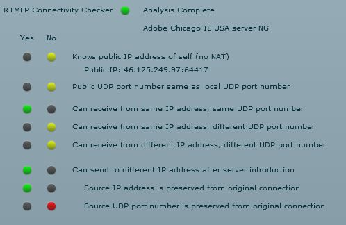
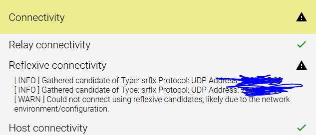

Liebe Community,
seit etwa einem Monat bin ich Kunde von Magenta und hab zu Hause eine Flex Box.
Ich nutzte privat teilweise Dienste die auf WebRTC basieren. Leider funktionieren diese nicht
mehr im Heimnetzwerk. Auch wenn ich mein Smartphone als Hotspot nutze (ebenfalls Magenta)
funktioniert das nicht.
Als ich es in der Arbeit versucht habe, ging alles einwandfrei.
Daher schließe ich aus, dass das Problem mit der Firewall am Laptop zu tun hat.
Blockt Magenta WebRTC Dienste oder woran kann es scheitern? Vielleicht
kann hier jemand helfen :-)
Danke und liebe Grüße
PS: habe verschiedene Test durchgeführt... u.a. folgendes Ergebnis bekommen.

Interessantes Thema. Du sprichst da den Zeitserver Dienst an oder meinst du da was anderes?
Hast du da einen Link zu einem Test? Webseite oder so?
vor 8 Stunden schrieb Christian_E:Interessantes Thema. Du sprichst da den Zeitserver Dienst an oder meinst du da was anderes?
Hast du da einen Link zu einem Test? Webseite oder so?
erstmals danke für die antwort. einerseits habe ich diesen test gemacht http://cc.rtmfp.net/
andererseits diesen hier: https://test.webrtc.org/
der folgendes ergebnis zeigt:

bin leider nicht ein superguru in netzwektechnik. kann wenig mit den infos anfangen. :-)
lg
Ok ich hatte Probleme mit meinen Ports. Hab diese manuell weitergeleitet, nun funkt alles. Danke
trotzdem an alle die darüber nachgedacht haben ;-)
Super das klingt gut.
Danke für die Rückmeldung.